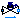
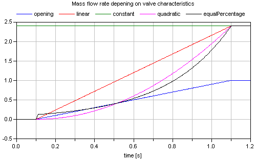

Base classes used in the Valves package (only of interest to build new component models)
Extends from Modelica.Icons.BasesPackage (Icon for packages containing base classes).
| Name | Description |
|---|---|
|  PartialValve | Base model for valves |
| Functions for valve characteristics |
Base model for valves
This is the base model for the ValveIncompressible, ValveVaporizing, and ValveCompressible valve models. The model is based on the IEC 534 / ISA S.75 standards for valve sizing.
The model optionally supports reverse flow conditions (assuming symmetrical behaviour) or check valve operation, and has been suitably regularized, compared to the equations in the standard, in order to avoid numerical singularities around zero pressure drop operating conditions.
The model assumes adiabatic operation (no heat losses to the ambient); changes in kinetic energy from inlet to outlet are neglected in the energy balance.
Modelling options
The following options are available to specify the valve flow coefficient in fully open conditions:
CvData = Modelica.Fluid.Types.CvTypes.Av: the flow coefficient is given by the metric Av coefficient (m^2).
CvData = Modelica.Fluid.Types.CvTypes.Kv: the flow coefficient is given by the metric Kv coefficient (m^3/h).
CvData = Modelica.Fluid.Types.CvTypes.Cv: the flow coefficient is given by the US Cv coefficient (USG/min).
CvData = Modelica.Fluid.Types.CvTypes.OpPoint: the flow is computed from the nominal operating point specified by p_nominal, dp_nominal, m_flow_nominal, rho_nominal, opening_nominal.
The nominal pressure drop dp_nominal must always be specified; to avoid numerical singularities, the flow characteristic is modified for pressure drops less than b*dp_nominal (the default value is 1% of the nominal pressure drop). Increase this parameter if numerical problems occur in valves with very low pressure drops.
If checkValve is true, then the flow is stopped when the outlet pressure is higher than the inlet pressure; otherwise, reverse flow takes place. Use this option only when needed, as it increases the numerical complexity of the problem.
The valve opening characteristic valveCharacteristic, linear by default, can be replaced by any user-defined function. Quadratic and equal percentage with customizable rangeability are already provided by the library. The characteristics for constant port_a.p and port_b.p pressures with continuously changing opening are shown in the next two figures:

The treatment of parameters Kv and Cv is explained in detail in the User's Guide.
With the optional parameter "filteredOpening", the opening can be filtered with a second order, criticalDamping filter so that the opening demand is delayed by parameter "riseTime". The filtered opening is then available via the output signal "opening_filtered" and is used to control the valve equations. This approach approximates the driving device of a valve. The "riseTime" parameter is used to compute the cut-off frequency of the filter by the equation: f_cut = 5/(2*pi*riseTime). It defines the time that is needed until opening_filtered reaches 99.6 % of a step input of opening. The icon of a valve changes in the following way (left image: filteredOpening=false, right image: filteredOpening=true):
If "filteredOpening = true", the input signal "opening" is limited by parameter leakageOpening, i.e., if "opening" becomes smaller as "leakageOpening", then "leakageOpening" is used instead of "opening" as input for the filter. The reason is that "opening=0" might structurally change the equations of the fluid network leading to a singularity. If a small leakage flow is introduced (which is often anyway present in reality), the singularity might be avoided.
In the next figure, "opening" and "filtered_opening" are shown in the case that filteredOpening = true, riseTime = 1 s, and leakageOpening = 0.02.
Extends from Modelica.Fluid.Interfaces.PartialTwoPortTransport (Partial element transporting fluid between two ports without storage of mass or energy).
| Name | Description |
|---|---|
| replaceable package Medium | Medium in the component |
| replaceable function valveCharacteristic | Inherent flow characteristic |
| Flow Coefficient | |
| CvData | Selection of flow coefficient |
| Av | Av (metric) flow coefficient [m2] |
| Kv | Kv (metric) flow coefficient [m3/h] |
| Cv | Cv (US) flow coefficient [USG/min] |
| Nominal operating point | |
| dp_nominal | Nominal pressure drop [Pa] |
| m_flow_nominal | Nominal mass flowrate [kg/s] |
| rho_nominal | Nominal inlet density [kg/m3] |
| opening_nominal | Nominal opening |
| Filtered opening | |
| filteredOpening | = true, if opening is filtered with a 2nd order CriticalDamping filter |
| riseTime | Rise time of the filter (time to reach 99.6 % of an opening step) [s] |
| leakageOpening | The opening signal is limited by leakageOpening (to improve the numerics) |
| Assumptions | |
| allowFlowReversal | = true to allow flow reversal, false restricts to design direction (port_a -> port_b) |
| checkValve | Reverse flow stopped |
| Advanced | |
| dp_start | Guess value of dp = port_a.p - port_b.p [Pa] |
| m_flow_start | Guess value of m_flow = port_a.m_flow [kg/s] |
| m_flow_small | Small mass flow rate for regularization of zero flow [kg/s] |
| Diagnostics | |
| show_T | = true, if temperatures at port_a and port_b are computed |
| show_V_flow | = true, if volume flow rate at inflowing port is computed |
| Name | Description |
|---|---|
| port_a | Fluid connector a (positive design flow direction is from port_a to port_b) |
| port_b | Fluid connector b (positive design flow direction is from port_a to port_b) |
| replaceable function valveCharacteristic | Inherent flow characteristic |
| opening | Valve position in the range 0..1 |
| opening_filtered | Filtered valve position in the range 0..1 |